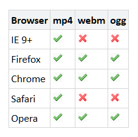

Video- und Audioeinbindung
Video
Dein Browser kann dieses Video nicht wiedergeben.
Du kannst ihn unter
http://wiki.selfhtml.org/local/small.mp4
abrufen.
Dein Browser kann dieses Video nicht wiedergeben.
Einige Beispiel-Attribute:
poster
source/src
autoplay
controls
height
width
loop
muted
preload: auto/ metadata/ none
track (subtitles)
Mögliche Dateiformate:

Sound
volume 0.0 bis 1.0
played?
buffered?
codec --> Premiere
HTML 5